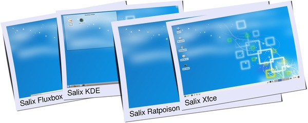

Salix comes in six different editions - MATE, Xfce, Fluxbox, Openbox, KDE and Ratpoison.
The choice is yours: the intuitive MATE desktop, a streamlined Xfce desktop environment, the lightness and high customizability offered by Fluxbox or Openbox as window manager, an elegant KDE accompanied by a very rich collection of KDE centric software, or "say goodbye to the rodent" Ratpoison, all with the Salix look and feel!
For now, Salix 14.1 offers MATE, Xfce, Fluxbox and Openbox, but other editions will follow in due course. Meanwhile, older versions continue to be supported.

For a list of applications available in each Edition, please refer to the later section (List of Applications).